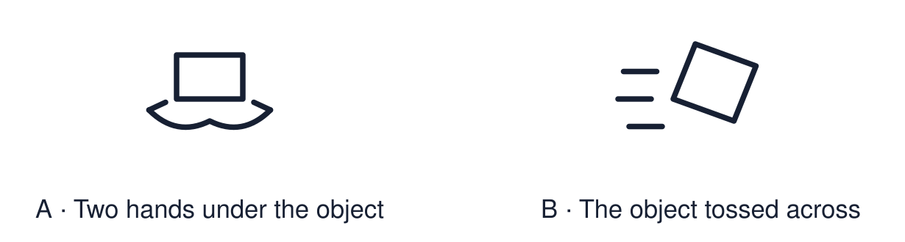

Arrival choices
Previous lesson reminder:

Start with 1 and 2. Try 3 and 4 when ready. Reading and exact scribing are available.
1 What is one sign that Sam is welcome at the gurdwara?
Support: Use the reminder strip or talk it through with an adult.
2 Which meaning fits respect?
Support: Choose: Treating people and things with care OR To hold or touch something with your hands.
3 Why do readers often use a pointer with a Torah scroll?
Support: Use the model evidence anchor C or read one relevant card together.
4 Do you have to touch an object to show respect for it?
Support: Give a reason when ready.
Stretch: use a precise example or explain which detail supports your answer.
Evidence cards
Read, point or listen. Keep the source label with any detail you use.
A Our handling rules
Clean hands. Wait for the adult. Use two hands. Keep the object over the table. You may choose to look and not touch.
Source: Authored classroom rules
Limit: Rules for a classroom replica are not the same as the rules believers follow.
B A holy book
Many Muslims wash before touching the Qur’an and keep it in a high, clean place. In class we use a photo or a protected copy and do not put it on the floor.
Source: Authored RE summary
Limit: Practice varies between families and communities.
C The Torah pointer
A Torah scroll is handwritten. Readers often follow the words with a pointer called a yad so that fingers do not touch the scroll.
Source: Authored RE summary
Limit: Practice varies between communities.
D Why it matters
Careful handling shows respect for the people who find the object sacred. We can respect an object without sharing the belief.
Source: Authored classroom resource
Limit: Respect can be shown in many ways, including by only looking.
Shared investigation
1. Decide whether each action shows respect.
2. Explain who the respect is for.
Work with a partner or adult, or use your own table. One person suggests; the other checks the evidence. Swap after one turn. Passing is allowed.
Move or match the cards
| Cards to use |
|---|
| Choose to look closely and not touch |
| Grab the object before the adult is ready |
| Hold the replica with two hands over the table |
Possible labels: Needs changing / Respectful
Support: Show two choices. Read one short instruction. Point, match or say a word, then add a reason when ready.
Further challenge: Explain how someone can respect an object without sharing the belief.
Supported independent task
Complete this route only. Show one respectful way to handle or respond to a special religious object.
1. Choose two respectful action cards.
2. Put them in order: first, next.
3. Point to or say why one of them matters.
Support: Show two choices. Read one short instruction. Point, match or say a word, then add a reason when ready. Complete the organiser one space at a time. I can show respect by ___. This matters because ___.
An adult may read or scribe your exact response. They should not choose the answer.
Standard independent task
Complete this route only. Show one respectful way to handle or respond to a special religious object.
1. Choose three respectful actions.
2. Put them in order: first, next, last.
3. Say why one action matters.
Support: I can show respect by ___. This matters because ___.
Check the required evidence and revise one detail.
Stretch independent task
Complete this route only. Show one respectful way to handle or respond to a special religious object.
1. Choose three respectful actions and put them in order.
2. Explain who each action shows respect for.
3. Explain how looking without touching can show respect.
Support: Choose the evidence independently. Use the frame only if it helps.
Explain how someone can respect an object without sharing the belief.
Exit ticket
Choose a response mode. You may give your answers privately to an adult.
Why do readers often use a pointer with a Torah scroll?
Do you have to touch an object to show respect for it?
Support: I can show respect by ___. This matters because ___.
Further challenge: Explain how someone can respect an object without sharing the belief.